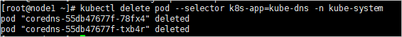
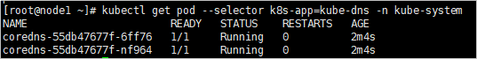
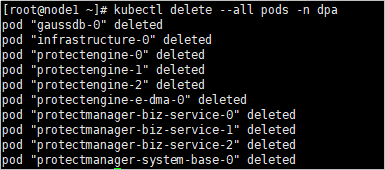
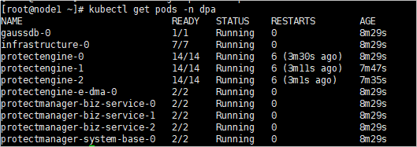

当系统的时间出现偏差时，需要修改系统时间，以便在出现告警时能根据告警日志准确地定位出设备告警产生的时间。通过该操作，可以同步客户端时间到设备、设置NTP自动同步或手动修改设备时间。配置设备时间后，必须重启OceanProtect所有服务，否则将导致数据保护任务下发失败。
前提条件
- 设置NTP自动同步前，需要完成NTP服务器的配置。NTP服务器的配置请参考配置DNS服务（适用于OceanProtect E6000备份一体机）。
- 在有防火墙的环境中使用NTP自动同步时，需要开启123端口。
背景信息
- NTP（Network Time Protocol）是一种同步计算机系统时间的协议，它可以将计算机的系统时间同步到世界协调时UTC（Universal Time Coordinated）。支持NTP协议的服务器称为NTP服务器。
- 通过同步客户端时间，可以将系统时间调整为和客户端时间一致。
- 通过设置NTP自动同步，可以将NTP服务器作为外部时间源，定期、自动地同步到设备。
注意事项
执行本操作后，设备时间发生变化，可能存在以下影响：
- 修改后的设备时间超过license有效期，可能会导致license失效。
- 修改后的设备时间若超过证书有效期，会导致证书过期。
- 修改后的设备时间若大于用户配置的密码有效期，可能会导致系统强制要求用户修改登录密码。
- 修改后的设备时间若超过设置的保存历史性能数据的截止时间，会导致系统不再保存历史性能数据。
- 修改设备时间会影响BBU寿命，可能会触发BBU模块寿命到期或老化的告警。
操作步骤
- 选择“设置 > 时间配置”，设置设备时间。
您可以通过以下三种方式设置设备时间：

请设置正确的时区和时间，否则可能导致告警或日志中记录的时间与实际时间不一致，影响后续问题定位。
- 手动修改
- 同步客户端时间
- 设置NTP自动同步
- 单击“修改”，选择“设置NTP自动同步”
- 在“NTP服务器地址”文本框输入NTP服务器的IPv4地址、IPv6地址或域名。
- 最多可以添加2个NTP服务器，当某个NTP服务器时间不能自动同步到设备时，系统将尝试同步另一个NTP服务器时间到设备。
- 确保两个NTP服务器的时间相同。
- 可选: 单击“测试”。
- 在“NTP认证”后勾选“启用”。
- 只有当NTP协议为NTPv4及后续版本时，才支持开启NTP认证，完成NTP服务器身份认证并自动将时间同步至存储设备。
- 开启NTP认证后需要导入CA证书。
- 在“时区”中选择相应的时区。
- 单击“保存”。
- 仔细阅读对话框中的内容，确认后选择“我已阅读上述信息，了解执行此操作带来的后果。”。单击“确定”。
- 重启OceanProtect所有服务。
- 使用PuTTY，通过管理IP地址，以root账号登录主机。
- 执行以下命令重启kube-dns服务。
kubectl delete pod --selector k8s-app=kube-dns -n kube-system
命令回显如下：

执行以下命令查看kube-dns服务状态。如果服务状态为Running时，则表示kube-dns服务已重启成功。kubectl get pod --selector k8s-app=kube-dns -n kube-system
命令回显如下：

- 执行以下命令重启所有数据备份特性容器。
kubectl delete --all pods -n dpa
命令回显如下：

- 执行以下命令检查所有POD是否启动完成。
kubectl get pods -n dpa
命令回显如下：

如果所有POD均为“Running”状态，则表示服务重启成功。此过程大约需要5-10分钟，请等待。